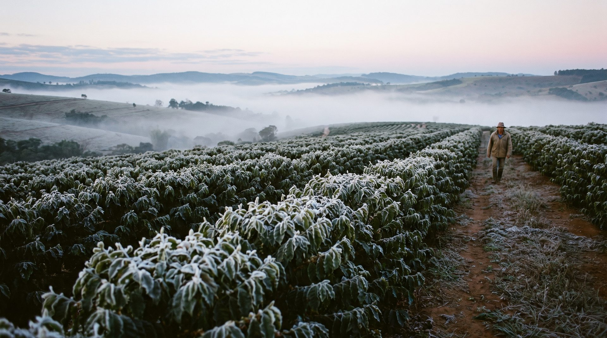
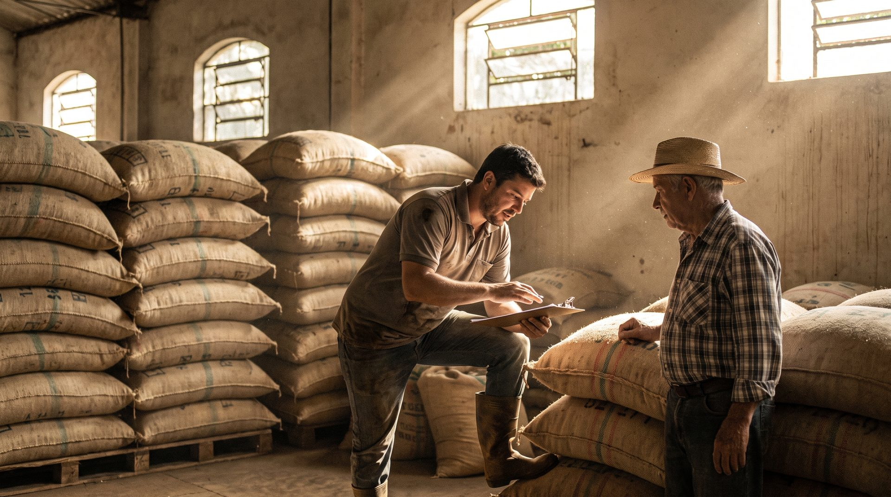

Assistente agronômica no WhatsApp
Manda a foto.
A folha com mancha, o áudio com a dúvida, o pin da lavoura. A Stevi olha, diz o que está vendo e de onde tirou — e nunca receita produto.
Número de teste (beta). Quem receita é o agrônomo — veja quem responde pela Stevi.
O que a Stevi vê
Ela vê a ferrugem na folha. a geada que vem de noite. a hora de pulverizar.


ferrugem · confiança médiafoto do verso da folha min. −1,2 °C às 05haviso na noite anterior Delta T 6.0 °Cpode pulverizar
Conversa de verdade
Ela diz o que vê. E o que não sabe.
- fonteEMBRAPA, Agrofit/MAPA, FRAC-BR, Portaria SDA/MAPA 1.579/2026 — em texto, não em chute.
- climaDelta T, vento e chuva do ponto exato da lavoura (Open-Meteo).
- soloTextura e pH pelo pin (SoilGrids/ISRIC), com o porquê da calagem.
- limiteProduto e dose, nunca. Isso é receituário — e ela te prepara pra ele.
que que é isso na folha da soja? tá se alastrando08:12 ✓✓
Pela foto, tem muita cara de ferrugem asiática (Phakopsora pachyrhizi) — confiança média. Pra confirmar, uma foto da parte de baixo da folha ajuda: é onde saem as pústulas.08:12
No princípio (MIP): monitore talhão a talhão, aja cedo e rotacione os modos de ação — já tem resistência confirmada em vários grupos (estrobilurinas, triazóis, carboxamidas).08:13
Agora, qual produto e qual dose, quem define é o engenheiro agrônomo, no receituário — é ele que assina a responsabilidade técnica. Leva essa suspeita pra ele que você já chega com a conversa pronta.08:13
Como funciona
Você manda
Pelo WhatsApp que já está no seu celular. Sem app, sem cadastro, sem senha.
uma foto. um áudio. o pin.
Geada às 4. Aviso às 22.
Com o pin da lavoura, a Stevi olha o tempo todo dia e manda o alerta na véspera — geada, fogo perto, janela de plantio. Você não pergunta; ela avisa.
Alertas de geada e queimada (INPE) para quem deixou o pin. Nada de spam: só quando muda o risco.
Por que confiar
Não receita.
Não inventa.
Mostra a fonte.
Indicar produto e dose é ato do engenheiro agrônomo, no receituário (Lei 14.785/2023). A Stevi para nessa linha de propósito — e te leva até ela com a conversa pronta.
Sem base sólida, ela diz que não sabe e manda pro agrônomo. Chute no campo custa a safra; silêncio honesto custa uma mensagem.
EMBRAPA, Agrofit/MAPA, FRAC-BR, a portaria do vazio sanitário em texto. Dá pra conferir de onde vem cada frase.
culturas com fonte oficial: soja, milho, pastagem, café e citros.
receitas de produto ou dose. Nunca. Isso é do agrônomo.
de vigia por dia no pin da lavoura, com alerta na véspera.

Para cooperativas e revendas
O agrônomo chega com a foto já vista.
- O cooperado manda a foto pra Stevi; o técnico recebe a triagem pronta e visita quem precisa primeiro.
- O dado da lavoura é do produtor. A cooperativa vê o que ele autorizar — e nada sai do Brasil.
- Um número, um QR no balcão. Sem app pra instalar, sem treinamento.
Perguntas
O que perguntam.
É de graça?
É, no beta a Stevi é gratuita. A ferramenta ajuda de graça e, quando você quiser ir além da triagem, ela te conecta a um agrônomo.
Funciona pra qual cultura?
Soja, milho, pastagem, café e citros — todas fundamentadas no registro Agrofit/MAPA (ferrugem, lagarta-do-cartucho, broca, greening e companhia).
A Stevi receita defensivo?
Não. Indicar produto e dose é ato do engenheiro agrônomo, no receituário agronômico (Lei 14.785/2023). A Stevi faz a triagem — te ajuda a entender e a saber o que perguntar — e encaminha a decisão pro agrônomo. É de propósito.
Preciso de internet boa?
Não. Ela vive dentro do WhatsApp e responde em texto, que é leve. Funciona bem em conexão de campo.
E se ela não souber?
Ela diz que não sabe e te manda procurar um agrônomo. Prefere o silêncio honesto a um chute — porque chute no campo custa caro.
Como ela sabe do meu clima e do meu solo?
Pelo pin da sua localização. Com ele, a Stevi puxa o clima (Open-Meteo) e o solo (SoilGrids/ISRIC). Você larga o pin uma vez e pronto.
E os meus dados?
A Stevi guarda o mínimo: a localização da lavoura e o histórico da conversa. Na primeira conversa ela pede permissão, uma vez só. “Apaga meus dados” funciona — é só pedir.
Manda um oi.
+1 (970) 550-9125
O WhatsApp abre com o “oi” já escrito — é só enviar. O número é internacional porque a Stevi está em beta; confira aqui quem responde por ela.